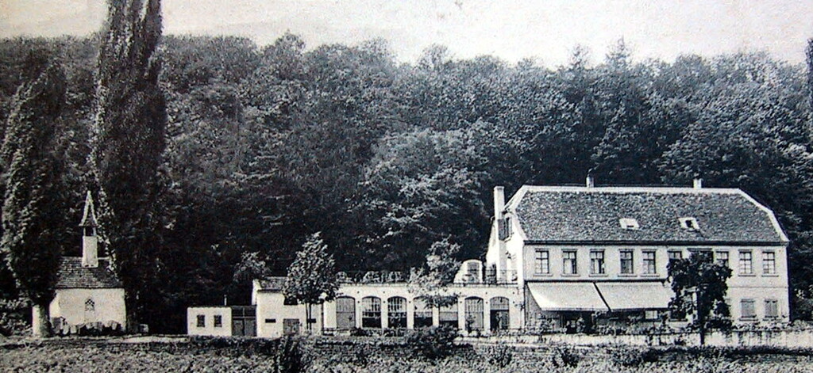

Waldmannsburg
Ein verlassenes Kulturdenkmal in Neustadt an der Weinstraße - neu gedacht.
Für meine Masterarbeit darf ich die denkmalgeschützte Waldmannsburg nutzen - in Austausch mit der Stadt Neustadt an der Weinstraße. Das Gebäude steht heute leer. Erste Unterlagen - Bestandspläne und Grundrisse - habe ich von der Stadt erhalten; sie bilden die Grundlage für meinen Entwurf.

Projekte
Von denkmalgeschützten Bestandsgebäuden über kreative Neubaukonzepte bis zu Corporate-Interior-Projekten: Räume, die Orientierung geben, Atmosphäre schaffen und langfristig nutzbar bleiben.
.png)
Mit dem Blick für Atmosphäre, Materialität und Licht — für Räume, die technisch funktionieren und emotional treffen.
Ich entwickle Innenräume, die funktionale Anforderungen mit Materialgefühl und einer klaren visuellen Sprache verbinden. Meine Projekte bewegen sich zwischen Bestand, Licht, Farbe, Corporate Interior und handwerklich nachvollziehbarer Umsetzung — von der Bachelorarbeit in einer denkmalgeschützten Bibliothek bis zur Corporate-Welt von Team Rossberg Engineering.
Neben dem Studium habe ich praktische Erfahrung in Indonesien gesammelt und arbeite heute parallel als Recruiterin. Mehrsprachigkeit und interkultureller Austausch prägen meinen Blick auf Räume und Menschen.
Fähigkeiten & Tools
Planung, Visualisierung, Materialentscheidungen und Kommunikation greifen in den Projekten zusammen.
Software & CAD-Tools
Vernetzte Werkzeuge: Von der baureifen Ausführungsplanung bis zur fotorealistischen Visualisierung.
Live-Aktivität & Meilensteine
Kontinuierliche Steuerung von Planungsphasen, Freigaben und Baustellenabstimmungen.
Entwurf & Raumplanung
Ganzheitliche Raumkonzepte vom ersten Handgriff bis zum baureifen Detail.
Grundrisse & Zonierung
Strukturierung komplexer Flächen, optimierte Wegeführung und funktionale Raumzonen.
M 1:50 · CAD3D-Volumen & Raumgefühl
Räumliche Proportionen, Sichtachsen und immersive Modellierung vor Baubeginn.
Modell · 3DLichtkonzepte & Akustik
2700K Warmlicht, gezielte Akzentuierung und schallabsorbierende Paneele.
Atmosphäre · LuxDetail- & Ausführungsplanung
Maßanfertigungen, Einbaumöbel, Fugenbilder und Schichtaufbauten.
M 1:20 bis 1:1Material & Atmosphäre
Reale Materialität, harmonische Oberflächen und physische Bemusterung für erlebbare Räume.
Stationen & Erfahrung
Experimenteller Raum
im Gespräch
Ein Podcast-Gespräch über zeitgenössische Raumtheorie, experimentelle Architektur und Design als Dialog
Wie geht die jüngere Generation an Gestalter*innen mit Raum um? Wie lässt sich daraus eine zeitgenössische Raumtheorie entwickeln?
In diesem Podcast-Gespräch mit Sascha Bauer (Founder, Studio Cross Scale) erkunden wir, wie experimentelle Architektur klassische Raumkonzepte adaptiert, kritisch hinterfragt und für unsere Zeit neu interpretiert.
Wir diskutieren:
Sascha Bauer gründete Studio Cross Scale in Berlin mit Fokus auf experimentelle, innovative Architektur. Das Büro konzentriert sich auf Materialität, Raumkonzepte und nachhaltige Praktiken.
studiocrossscale.com ↗Get in touch
Für Projektanfragen, Austausch oder Rückfragen zum Portfolio freue ich mich über eine Nachricht.